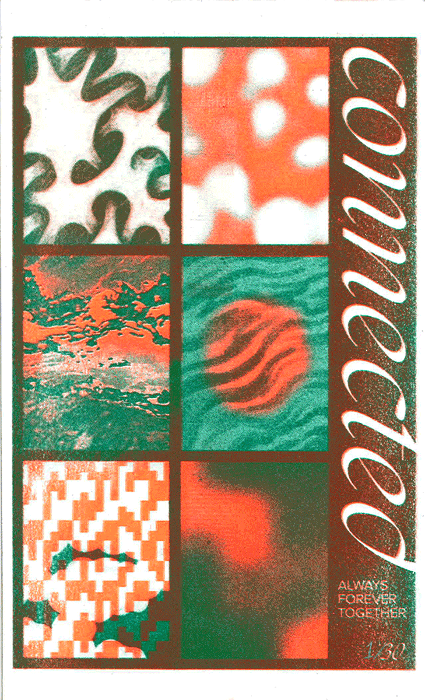
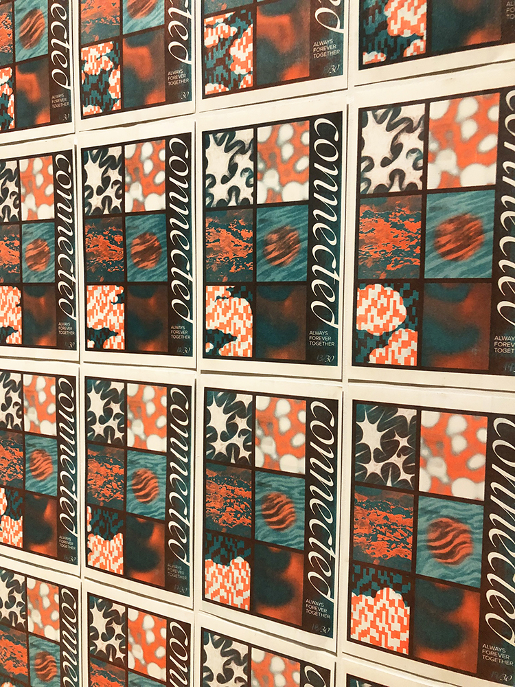

ALWAYS / FOREVER / TOGETHER
Two-color risograph prints (fluo orange and aqua), self-printed, 2024
ALWAYS / FOREVER / TOGETHER is a series of 30 risograph prints that make up a 30-frame animation. A/F/T was inspired by the idea that “connection” isn’t about losing yourself to the whole, but understanding that you’ve always been part of it.
This applies to the project’s process as well; inspired by natural cycles like river currents and rolling clouds, I used illustration, motion graphics, and video to create the designs. The visuals and mediums are distinct, but together comprise each print. This project is about realizing that connection isn’t losing ourselves to the whole, but understanding that we already complement it. Instead of seeking ways to detach and fade into isolation, we must recognize and strengthen the connections we’re privileged to have.
This project was exhibited at Work in Progress' BLOOM Showcase. Huge thank you to my friend Gianna Meola for letting me print these at her studio.

